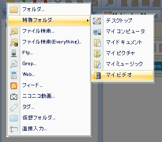

Mebiusbox 2.x ユーザーガイド
はじめに
Mebiusbox2 はファイル整理ソフトです。
フォルダ内のコンテンツをリスト表示し、それに対してファイル処理を行うことが主な使い方になります。
フォルダ
Mebiusbox2 におけるフォルダとは、ファイルシステム上のフォルダ（ディレクトリとも呼ばれる）とは違っており、
フォルダ内に含まれるアイテムが必ずしもファイルではありません。例えば、フィードのエントリやニコニコ動画ランキングなどが良い例です。
フォルダの種類
Mebiusbox2 が扱えるフォルダは以下のとおりです。
- ファイルシステム
- ファイル検索
- ファイル検索(Everything)
- FTP
- Grep検索
- Web
- Feed
- ニコニコ動画ランキング
- タグ
- 仮想フォルダ
通常、「アドレスを開く」で、フォルダを選択することになります。

※直接入力とは、後述するアドレスを入力します。
アドレス
Mebiusbox2におけるフォルダやアイテムには固有のアドレスが存在します。
特にこのアドレスを気にする必要はありませんが、カスタマイズする際には重要になってきます。